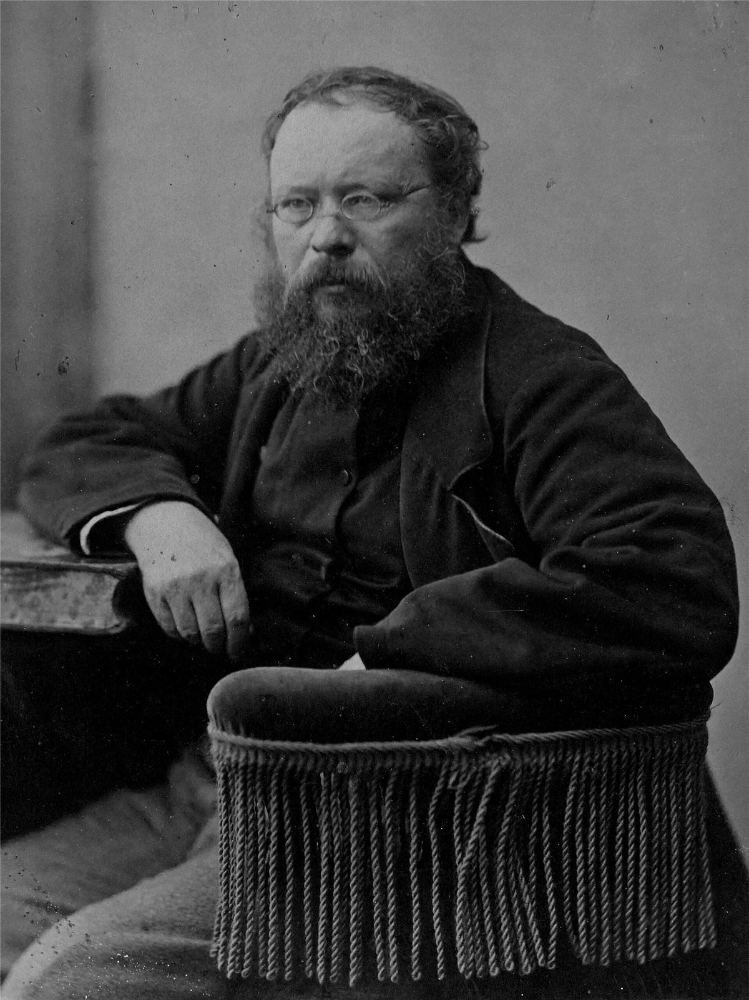
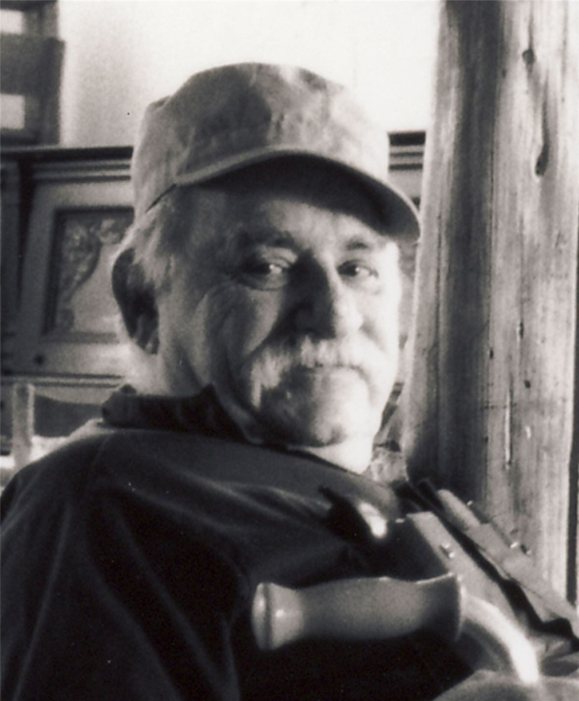

Dossier à relire par la bande.
Introduction
Le communalisme libertaire est un courant de pensée et de pratique politique qui cherche à construire une société fondée sur l'autonomie des communes, la démocratie directe, la coopération et la fédération libre des collectivités.
Il repose sur une idée fondamentale : les habitants doivent pouvoir reprendre collectivement le contrôle de la vie politique, économique et sociale de leurs territoires.
Dans cette perspective, la commune ne doit pas être simplement une circonscription administrative de l'État. Elle constitue un espace politique dans lequel les personnes peuvent se réunir, débattre, décider et organiser directement les affaires communes.
Le communalisme libertaire s'oppose ainsi à la concentration du pouvoir dans les institutions étatiques, les administrations centralisées et les structures économiques capitalistes.
Il défend une organisation sociale dans laquelle les décisions sont prises au plus près des personnes concernées, tout en étant coordonnées à une échelle plus large par des mécanismes fédéralistes.
Le communalisme libertaire possède plusieurs racines historiques dans les traditions socialistes et anarchistes du XIXe siècle. Les idées de Pierre-Joseph Proudhon, de Mikhaïl Bakounine et de Pierre Kropotkine ont notamment contribué à développer une réflexion sur la fédération des communes et l'organisation décentralisée de la société.
Au XXe siècle, Murray Bookchin développe une conception contemporaine du municipalisme libertaire, étroitement liée à l'écologie sociale. Il propose de reconstruire une vie politique démocratique à partir des municipalités et des assemblées populaires, puis de les fédérer.
Le communalisme libertaire ne désigne cependant pas une doctrine historiquement uniforme. Les traditions communales, le fédéralisme anarchiste et le municipalisme libertaire de Bookchin possèdent des points communs, mais aussi des différences importantes.
Il convient donc de distinguer les expériences historiques de gouvernement communal, les projets fédéralistes anarchistes et les propositions théoriques contemporaines.
1. Les traditions communales et fédéralistes du XIXe siècle

Les idées communales et fédéralistes occupent une place importante dans l'histoire des mouvements socialistes et libertaires.
Au XIXe siècle, les débats sur l'émancipation sociale ne portent pas uniquement sur la propriété des moyens de production ou l'organisation du travail. Ils concernent également la manière dont les populations peuvent décider collectivement de leurs affaires.
Plusieurs penseurs socialistes et anarchistes défendent une organisation politique décentralisée, fondée sur l'autonomie des collectivités et leur association volontaire.
Pierre-Joseph Proudhon développe notamment une pensée fédéraliste qui cherche à limiter la concentration du pouvoir politique et économique.
Mikhaïl Bakounine défend une fédération de communes, d'associations et de collectivités autonomes, organisée de bas en haut.
Pierre Kropotkine développe également une réflexion sur les communes libres, la coopération et la décentralisation économique.
Ces traditions ne constituent pas encore le communalisme libertaire au sens contemporain du terme. Elles fournissent cependant plusieurs de ses références historiques.
L'idée commune est que l'émancipation ne doit pas dépendre d'un pouvoir central prétendant représenter l'ensemble de la population.
Elle doit être construite à partir des collectivités elles-mêmes, associées librement dans des structures fédérales.
2. La Commune de Paris de 1871

La Commune de Paris constitue une expérience historique majeure pour les traditions révolutionnaires et fédéralistes.
Après la défaite française face à la Prusse et la crise politique qui suit la chute du Second Empire, une insurrection éclate à Paris en mars 1871.
Le 18 mars, une partie de la population parisienne et de la Garde nationale s'oppose à la tentative du gouvernement de reprendre les canons de la capitale.
Un pouvoir communal révolutionnaire est ensuite mis en place.
La Commune développe plusieurs mesures politiques et sociales, notamment :
- L'élection de représentants révocables.
- La limitation de certains privilèges politiques.
- La séparation de l'Église et de l'État.
- Des mesures en faveur des travailleurs.
- La réorganisation de certains services publics.
- La défense de l'autonomie communale.
La Commune ne constitue pas une expérience exclusivement anarchiste. Elle rassemble des républicains révolutionnaires, des socialistes, des blanquistes, des proudhoniens et d'autres sensibilités.
Cependant, son existence nourrit durablement les réflexions sur la démocratie communale et le fédéralisme révolutionnaire.
Dans le mouvement anarchiste, elle devient une référence importante pour penser une société organisée à partir de communes autonomes et fédérées.
La Commune est écrasée en mai 1871 lors de la Semaine sanglante. La répression entraîne des milliers de morts, d'arrestations et de déportations.
Son héritage dépasse néanmoins largement sa courte existence.
Voir aussi : Comment la Commune s'organisait et ses décrets, dans Histoire des luttes, et La Commune de Paris de Kropotkine, dans la bibliothèque.
3. Le fédéralisme anarchiste
Le fédéralisme anarchiste constitue l'une des principales traditions intellectuelles à l'origine des conceptions communales libertaires.
Il repose sur l'association libre de collectivités autonomes.
Contrairement à une organisation centralisée, dans laquelle les décisions descendent d'une autorité supérieure, le fédéralisme cherche à organiser la coopération à partir des unités de base.
Les communes, les associations, les syndicats et les collectivités peuvent ainsi se coordonner sans abandonner leur autonomie.
Bakounine défend notamment une organisation de la société dans laquelle les individus s'associent au sein de communes, puis les communes au sein de fédérations plus larges.
Cette conception s'oppose à la souveraineté d'un État centralisé.
Elle ne signifie pas que chaque commune doit vivre isolée. Au contraire, l'autonomie locale doit être articulée à une coopération organisée entre les territoires.
Le fédéralisme constitue ainsi un principe politique, économique et social.
4. Kropotkine : la commune, la coopération et l'entraide
Pierre Kropotkine développe une réflexion importante sur les relations entre organisation sociale, coopération et liberté.
Dans La Conquête du pain, publié en 1892, il envisage une société dans laquelle les besoins humains sont satisfaits par une organisation collective de la production et de la distribution.
Il défend une organisation décentralisée, fondée sur les communes, les associations et la coopération entre producteurs.
Dans L'Entraide, un facteur de l'évolution, publié en 1902, il étudie les formes de coopération présentes dans le monde animal et dans les sociétés humaines.
Il cherche à montrer que la solidarité et l'entraide constituent des dimensions importantes de l'évolution et de l'organisation collective.
Ces réflexions contribuent à nourrir une conception de la société dans laquelle les collectivités peuvent organiser leurs besoins sans dépendre d'une autorité étatique centralisée.
Kropotkine ne développe toutefois pas le municipalisme libertaire contemporain de Bookchin. Il appartient à une tradition anarchiste antérieure dont certaines idées seront reprises et transformées par la suite.
5. Le communalisme dans les traditions révolutionnaires
Les projets de communes libres et de fédérations communales traversent plusieurs mouvements révolutionnaires.
Ils apparaissent notamment dans les débats de la Première Internationale, dans les mouvements anarchistes et dans les expériences révolutionnaires du début du XXe siècle.
L'idée de « commune des communes » exprime la volonté de dépasser l'organisation étatique centralisée sans supprimer la coordination entre collectivités.
Dans cette perspective, les communes ne sont pas des unités administratives dépendant d'un gouvernement national.
Elles constituent les bases d'une organisation politique reposant sur l'autonomie, la solidarité et la fédération.
Cette tradition est diverse et ne se limite pas à un seul pays ou à une seule école de pensée.
6. Murray Bookchin et l'écologie sociale

Murray Bookchin (1921-2006) est l'un des principaux théoriciens du municipalisme libertaire contemporain.
Il développe ses réflexions à partir des années 1960, en établissant des liens entre la critique du capitalisme, la domination sociale et la crise écologique.
Bookchin considère que la domination exercée par les humains sur la nature est étroitement liée aux formes de domination présentes dans les sociétés humaines.
Il développe ainsi le concept d'écologie sociale.
Selon cette approche, les problèmes écologiques ne peuvent pas être résolus uniquement par des changements techniques ou individuels. Ils nécessitent une transformation des rapports sociaux, politiques et économiques.
Bookchin s'intéresse particulièrement à la ville et à la municipalité comme espaces possibles de reconstruction démocratique.
Il critique la transformation des villes en espaces dominés par l'urbanisation capitaliste, la bureaucratie et la concentration du pouvoir.
Il propose de réhabiliter la dimension politique de la commune en permettant aux habitants de participer directement aux décisions collectives.
Ses réflexions évoluent progressivement vers le municipalisme libertaire, puis vers le communalisme, qu'il présente comme une synthèse politique plus large.
7. Le municipalisme libertaire
Le municipalisme libertaire est développé par Bookchin comme une stratégie de transformation sociale à partir des municipalités.
Il ne s'agit pas simplement de défendre davantage de compétences pour les collectivités territoriales.
Le projet consiste à transformer les institutions municipales pour en faire des espaces de démocratie directe.
Les habitants pourraient participer à des assemblées populaires chargées de débattre et de décider des affaires communes.
Ces assemblées seraient ensuite fédérées avec celles d'autres communes.
L'objectif est de construire progressivement une forme de pouvoir populaire capable de s'opposer à la domination de l'État et du capitalisme.
Bookchin distingue la politique, entendue comme activité collective des citoyens, de la gestion étatique exercée par des institutions spécialisées et des professionnels du pouvoir.
Il envisage ainsi une reconstruction de la vie politique à partir des assemblées communales.
Le municipalisme libertaire constitue l'une des expressions contemporaines les plus structurées de la tradition communale libertaire.
8. Du municipalisme libertaire au communalisme
Au cours de son parcours intellectuel, Bookchin développe et précise sa pensée.
Il utilise progressivement le terme de communalisme pour désigner une orientation politique plus générale.
Le communalisme cherche à articuler plusieurs dimensions :
- La démocratie directe.
- L'autonomie des communes.
- Le fédéralisme.
- L'écologie sociale.
- La transformation de l'économie.
- La critique de la domination.
- La reconstruction d'une vie politique populaire.
Bookchin considère que le communalisme ne doit pas se limiter à une stratégie municipale.
Il doit proposer une conception globale de l'organisation sociale, politique et économique.
Il affirme également que les traditions anarchistes et marxistes possèdent des apports importants, mais qu'elles doivent être repensées à la lumière des transformations contemporaines.
Cette évolution provoque des débats avec d'autres anarchistes, notamment sur la question de la participation électorale aux institutions municipales et sur le rapport entre pouvoir populaire et État.
9. Les mouvements contemporains et les nouvelles expériences communales
À partir de la fin du XXe siècle, différentes expériences politiques s'intéressent aux formes de démocratie locale, de fédéralisme et d'autonomie territoriale.
Certaines se réclament directement du municipalisme libertaire ou du communalisme.
D'autres développent des pratiques proches sans reprendre exactement le vocabulaire ou les conceptions de Bookchin.
Le mouvement kurde autour du confédéralisme démocratique constitue l'un des exemples contemporains les plus étudiés.
Les écrits de Murray Bookchin ont influencé Abdullah Öcalan, qui développe une conception de l'autonomie démocratique et du confédéralisme démocratique.
Cependant, le mouvement kurde possède sa propre histoire politique, ses propres traditions et ses propres évolutions.
Il serait donc incorrect de présenter le confédéralisme démocratique comme une simple application du municipalisme libertaire.
Ces rapprochements doivent être étudiés avec précision, en distinguant les influences intellectuelles des pratiques politiques réelles.
Dans ce dossier
- Idées et théories
- Expériences et héritages, avec la conclusion et la bibliographie complète du dossier.
- Pour apprendre pas à pas : le parcours Communalisme libertaire de l'université populaire.
- Les portraits de Proudhon, Bakounine, Kropotkine, Murray Bookchin et Abdullah Öcalan.
Sources et pour aller plus loin
Bibliographie du dossier
- Bibliographie et ressourcesTextes, travaux universitaires, archives et ressources en ligne, en bas de la page Expériences et héritages.
Sur le site
- AnarchismeLe dossier de référence de la famille.
- Produire et décider sans ÉtatCommunes libres et fédérations, dans le dossier Communisme libertaire.
- La Fédération comme moyen d'unionKropotkine, 1918, dans la bibliothèque.
Dossier rédigé par la bande à Mamie à partir des textes originaux et des travaux d'historiennes et d'historiens cités en sources. Libre de reproduction.